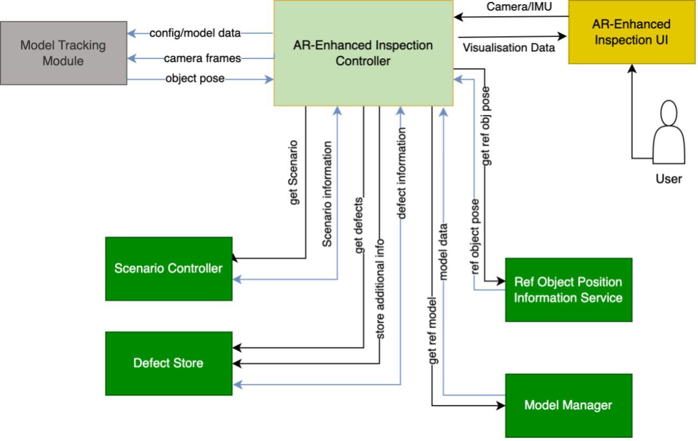
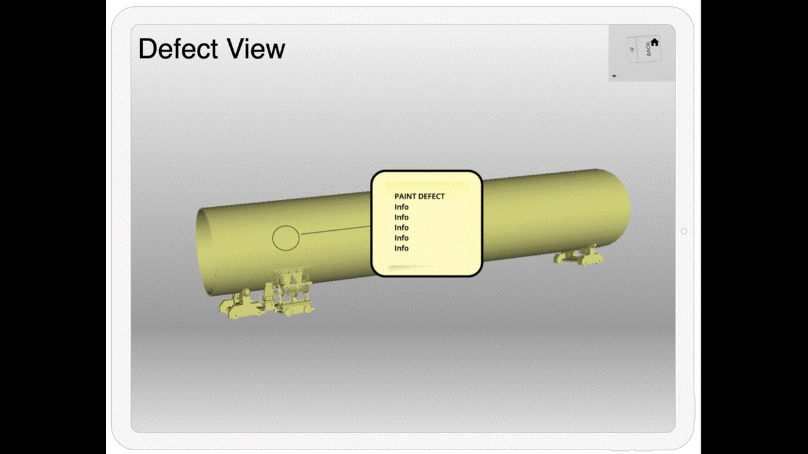

AR Enhanced Inspection
General Description
The application allows users to navigate to previously recognized defects to verify and document the automatically found issues. In order to achieve this, the application understands its own position in relation to the inspected object. This task is divided in two parts: tracking the device position in the environment and recognizing the objects pose in this environment. Defect data from the automatic defect recognition step is imported into a backend service or provided via an API. The app’s spatial understanding allows the user to be guided to the defect spots. The defect information is then superimposed on the defect site, and the user can proceed with further actions, like fixing the defect or documenting it with images or textual information.
Top Ten Functionalities
-
Device tracking in the environment: In order to have a consistent environment for virtual information, the device is keeping track of its on position and orientation in the real environment. Based on this, the examined objects position can be followed as well, after aligning it to the AR environment.
-
Geometry import to generate reference structures: In order to visualize defects on an object's surface, its geometry needs to be known. The simplest approach is to import mesh data into the application. In the pilot, this information available as a parametric modell, which needs additional work to translate it into mesh-data. This step will most likely be developed as an external (out of the application) service.
-
Defect data import: Data is provided to the mobile application via a Restful API. This API is either provided by the data producing application, or by a data server developed for this purpose. For this, an API for defect and associated Information was created and implemented in the Client application. A data server and import tools were developed.
-
Robot arm pose import: Further analysis of the on-site workflow revealed that the robotic arm is not available while the application is in use, requiring a different way to locate the object in the AR space.
-
Superimposition of found defect in AR: Defect information is superimposed on to the object's surface in the AR devices 3d view. This includes markings to identify the location as well as text information to identify the defect type and ID. Color can be used to identify the defects "State".
-
Navigation to defect sites: The application shall guide the user through the physical environment, in order to find the next defect location. This either is done by visually highlighting all (relevant) locations in the devices field of view, or, by actively guiding the user to a specific defect (with visual hints).
-
User guidance: The application shall guide the user through the applications workflow - give the user hints to go through all necessary steps for usage.
-
Documentation support: A user shall be able to leave textual information on each defect (comment). A comment can be accompanied by an image taken on the mobile device. The user can change the "Rating" of the Defect (eg from "recognized" to "needs rework", "cosmetic", "dirt" or similar).
Architecture

- AREI Controller: This Core module orchestrates the inspection session. It loads all needed data from the corresponding services as indicated by the session service and acts as a data backend for the UI.
- AREI UI: This module combines the tracking information (spatial relation between device and tracked object) and the defect information provided via the controller to superimpose the information onto the object in the cameras field of view. It also provides the user with an interface to add additional information to recognized defects.
- Model Tracking Module: The Model Tracking Module is responsible for recognizing the inspected object in the camera images and determine an exact enough position to superimpose content on the object. For this, the user sets a coarse alignment which will be refined by the algorithm.
- Scenario Controller: Contains information about which data belongs to the (current) session. Mainly data, tracking support data and CAD Models.
- Defect Store: This module provides access to the defect data, which either can be a service holding this data, or an API to directly access it in its original location.
- Ref Object Position Information Service: This module provides access to real time information on the pose of the inspected object and support machinery. Possible data include angle of the object (roll) or pose of the support robot arm.
- Model Manager: This module provides access to the object CAD data, which either can be a service holding this data, or an API to directly access it in its original location. Depending on the Data format, an integrated conversion step might be necessary.
Image Overview

The Slideshow shows three scenes from the application:
- A mockup of the defect overview.
- The app showing a virtual wind-tower segment with a defect indicator in Augmented Reality.
- The app showing a virtual wind-tower segment with a recorded defect image and input for textual annotations.
Hardware Components
Mobile Device
The handhelt mobile device in this application is the Apple iPad pro, with its integrated lidar sensor. With this hardware, the necessary accuracy can be reached. After Development, lower performnace devices can be tested and might be suitable as well.
Backend Service
If not directly connected to an Data Source Application via the documented API, the mobile applications connects to a Backend service, which only has to handle and manage data, without huge performance requirements. The Service is delivered as a Docker Image
Computation Requirements
Mobile Application
M1 or A12Z iPad Pro
Backend Service
Docker host with 2GB RAM + 30GB Storage. Storage has to be scaled with the data to be held in the backend.
Installation Procedure
The instructions for installing the app will be defined once the application has been completed.
How To Use
The instructions for using the app will be defined once the application has been completed.
Additional Learning Materials
Links to other learning materials like youtube tutorials will be added once the application has been completed.